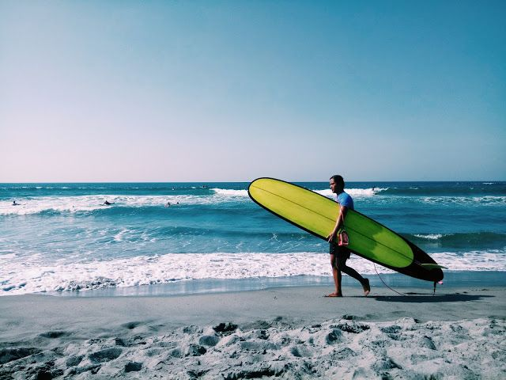
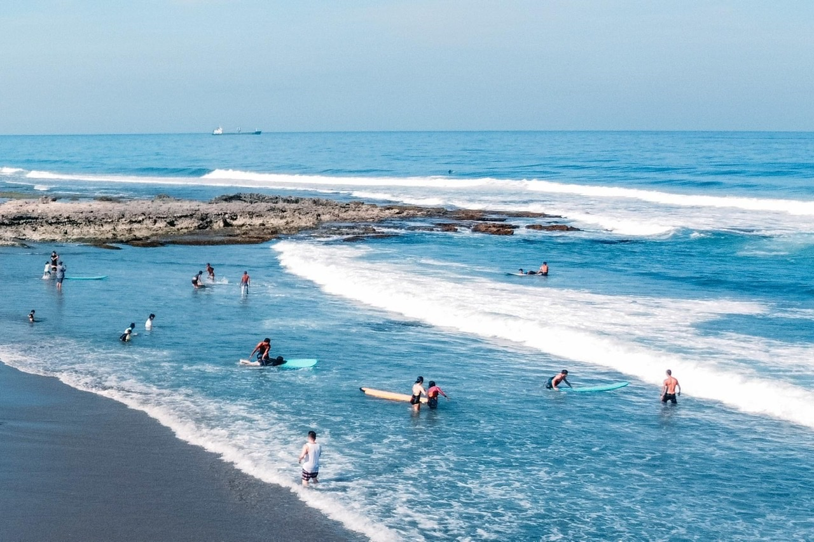
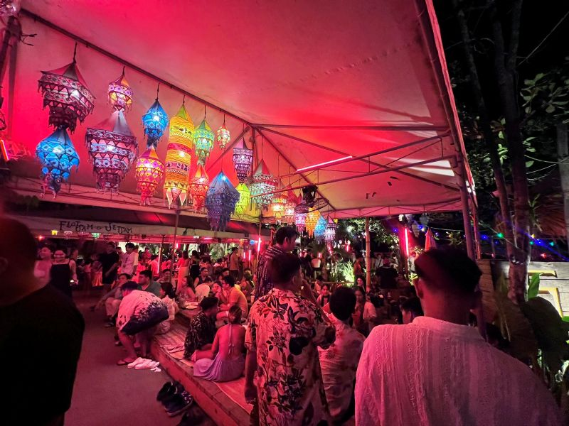

Explore Elyu (La Union) 🇵🇭



Why is Elyu Special to Me?
La Union, also known as Elyu, is the surfing capital of the North. The chill beach vibes, beautiful sunsets, and friendly locals make it a perfect getaway. Whether you're surfing or just relaxing by the shore, Elyu is a paradise.
How to Get There
The best ways to reach Elyu:
- By Bus: From Manila, take a bus to San Juan, La Union (4-6 hours).
- By Car: A scenic road trip via the North Luzon Expressway (NLEX).
Must-Visit Places in Elyu
- San Juan Beach: The best surfing spot.
- Baluarte Watch Tower: A historical site with ocean views.
- Ma-Cho Temple: A beautiful Chinese temple.
- Immuki Island: Crystal clear water lagoons.
Back to Home